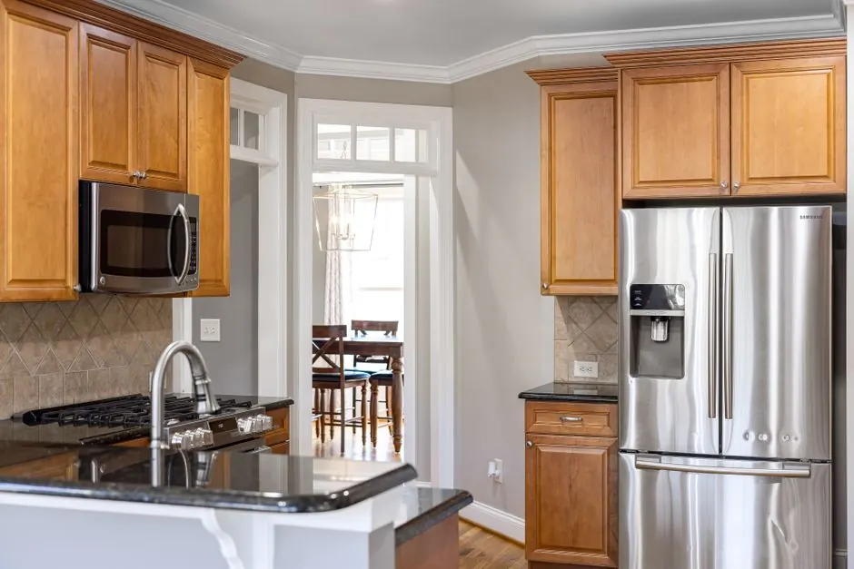
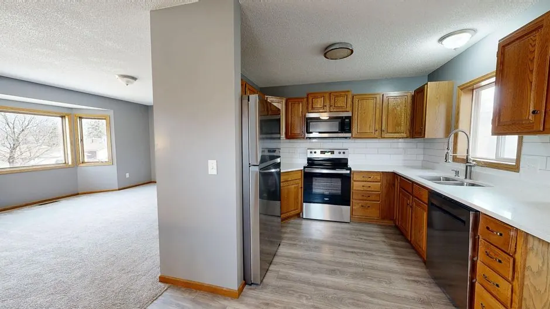

Diagnostic assessment
A thorough diagnostic assessment to identify the root cause of the problem.
Washing machine repair Sarasota FL is essential for homeowners facing appliance malfunctions. Our affordable washing machine repair Sarasota services ensure your laundry routine remains uninterrupted, providing quick and effective solutions.

Washing machine repair Sarasota FL involves diagnosing and fixing various issues that prevent your appliance from functioning correctly. This includes addressing problems like leaks, drainage issues, and mechanical failures, ensuring your washing machine operates efficiently.
Local Sarasota customers often need washing machine repair due to the humid climate, which can lead to mold and mildew in appliances. Common scenarios include washer not draining and leaking, making our washer repair Sarasota services vital for maintaining your appliance's health.
Our washing machine repair service covers various aspects, from diagnosing issues to replacing faulty parts, ensuring your appliance runs efficiently.
A thorough diagnostic assessment to identify the root cause of the problem.
Replacement of any faulty parts, such as hoses or pumps, with high-quality components.
Post-repair testing to ensure your washing machine is functioning correctly.
Providing you with maintenance tips to prevent future issues and prolong your appliance's lifespan.
We begin with a thorough consultation to understand your washing machine issues, asking specific questions to pinpoint the problem accurately.
Our technicians conduct a detailed diagnostic assessment of your washing machine, using tools like multimeters and screwdrivers to identify the root cause of the malfunction.
Once diagnostics are complete, we provide a clear repair plan outlining necessary parts and labor, ensuring transparency in our service.
Our skilled technicians perform the repairs using quality parts and tools, addressing issues such as clogged drain pumps or leaking hoses efficiently.
After repairs, we conduct a final inspection to ensure your washing machine operates correctly, providing peace of mind before we conclude the service.

We begin with a thorough consultation to understand your washing machine issues, asking specific questions to pinpoint the problem accurately.
Used for diagnosing electrical issues within the washing machine.
Essential for removing panels and accessing internal components.
Used to clear clogs in the drainage system of the washing machine.
Ensures leak-proof connections when replacing hoses and fittings.
The washing machine was leaking water, causing damage to the surrounding area.
After: After our repair, the washer is leak-free, saving the homeowner from potential water damage costs.
Book this service →The washer was not draining, leaving clothes soaked after cycles.
After: Post-repair, the washer drains efficiently, ensuring clothes are ready to wear.
Book this service →
The washer was excessively shaking during cycles, risking damage.
After: After adjustments, the washer runs smoothly without vibrations.
Book this service →Our washing machine repair services address common issues that can disrupt your laundry routine.
Ask a pro →Our technicians can quickly identify blockages and repair or replace the drain pump to restore functionality.
We will locate the source of the leak and fix it, ensuring your appliance is safe to use.
Our team will assess the balance and suspension system, making necessary adjustments or repairs.
$150 - $450 depending on scope
Washing machine repair costs in Sarasota typically range from $150 to $450, depending on the complexity of the issue. Factors affecting price include parts needed, labor time, and urgency of the service. Our affordable washing machine repair Sarasota services ensure you get value for your investment.
Our transparent pricing ensures you know what to expect without hidden fees, providing peace of mind.
Simple repairs like hose replacements cost less than complex electrical issues.
Get a quote ↗The cost of parts can vary significantly based on brand and availability.
Get a quote ↗Emergency repairs may incur additional fees due to the immediate nature of service.
Get a quote ↗More extensive repairs will naturally take longer, impacting overall cost.
Get a quote ↗“I had an excellent experience with the washing machine repair service. They arrived on time and fixed my issue quickly. Highly recommended!”
Emily R.Homeowner, Laurel Park
✓ Verified“The team was professional and knowledgeable. They diagnosed my washer's problem in no time and had it running smoothly again.”
James T.Resident, Burns Court
✓ Verified“I was impressed with the quick response and quality of service. My washing machine is working like new again!”
Sarah L.Homeowner, Gillespie Park
✓ VerifiedMost washing machine repairs in Sarasota typically range from $150 to $450, depending on the issue and parts needed.
You can find reliable washer repair services in Sarasota by searching online or contacting local appliance repair companies.
Common washing machine issues in Sarasota include leaking, not draining, and excessive shaking, often due to humidity and wear over time.
Most washer repairs can be completed within a few hours, with same-day service available for urgent issues.
Contact us today for prompt and reliable washing machine repair services. Our experienced team is ready to assist you!
Get a Quote (941)1233455 →Reach out to us for any washer repair needs. We're available to answer your questions and provide assistance during our business hours.